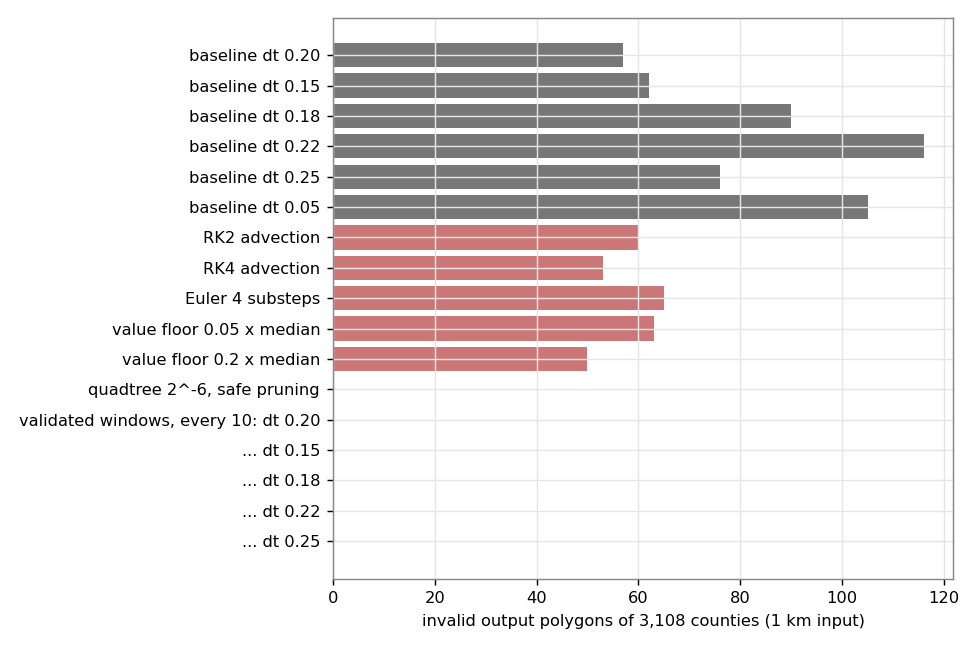
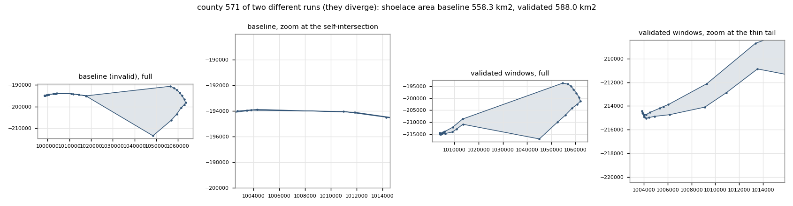
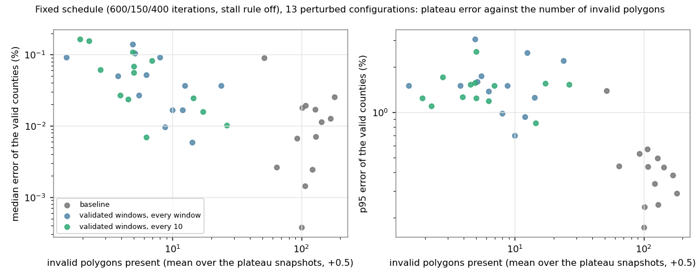
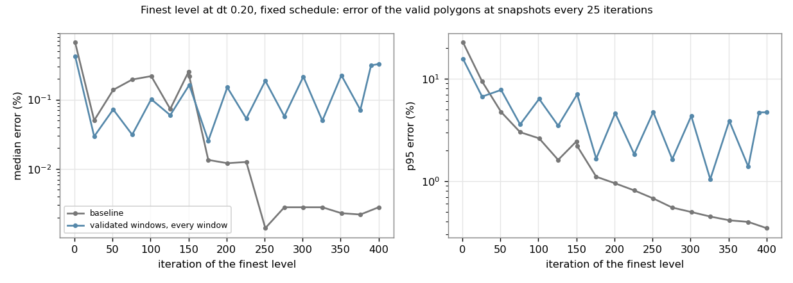

Validated windows (crossing test on the window-end state, splitting of the crossing segments at the midpoint of their window-start chord, replay of the new vertices through the recorded steps) give 0 invalid polygons of 3,108 counties (baseline 12 to 158 over 18 perturbed configurations) at 1.1 to 1.3 times the baseline time and +0.1 % vertices. The second round tests accuracy with perturbed runs: the mean error and the number of counties above 10 % do not change, the median and p95 error of the valid counties are higher (median 0.007 % to 0.07 %, p95 0.6 % to 1.8 % in the returned iterate of the fixed-schedule test) with the baseline's invalid polygons frozen as the likely cause; the earlier single-run differences are stall timing. Coarse input: densifying to 1.4 cells and checking every 10 windows gives 0 to 3 invalid at 24 s; the flatness-criterion variants on the raw input leave 6 to 11. Memory: float32 fields plus a 64 to 128 MB budget bound the stored fields at the same output. The density-field repair adds nothing once polygons are valid.
Outcome (2026-10-26). Validated windows were implemented as validity="repair-crossings" (PR 180, merged) and the quadtree windows as validity="repair-quadtree" (PR 181, merged). In this page the values are called windows and quadtree (the names of the prototypes). The density-field repair was dropped (issue 176 closed); the raw coarse input is handled by densifying the input first or by "repair-quadtree".
The flow cartogram moves vertices individually, so the image of a straight segment is not a straight segment. Where a region is squeezed to a strip narrower than the vertex spacing, chords cross and the polygon is invalid. The baseline ends with 57 invalid counties of 3,108. Which approach gives zero invalid polygons (or close to it) at a small cost, keeps every input vertex and gives each inserted vertex a lineage for backfilling earlier animation frames, and does not lose accuracy?
As specified in the task: 1 km county input (768,580 vertices), morph_multiresolution(min_resolution="auto", levels="auto"), MorphOptions(area_scale=1e-6, n_iter=1000). Invalid = shapely.is_valid false on the returned best iterate. Errors are computed on the valid polygons only, with the targets normalized on them. Baseline: 20 s, 57 invalid, mean/median/p95 error 1.37/0.252/2.44 %, 60 valid counties above 10 %, levels 540/110/170 iterations (all stalled). harness.py runs and prints all metrics, run.sh runs a script against the worktree.
Two cautions that apply to every accuracy number below:
dt from 0.20 to 0.18 or 0.22 changes the baseline invalid count to 90 and 116 and its median error from 0.252 % to 0.014 % and 0.020 %. Mean errors of the baseline over dt in 0.15 to 0.25 range from 0.67 % to 5.45 %. A difference of less than a factor of 2 to 3 in a mean error or in the count above 10 % is not a result.xing.py, vw.py)Inside a window (between two field recomputes) the field is fixed, so each vertex moves independently of all others. This has three consequences used here.
What was built:
xing.py: crossing detection for all segments of all rings with a uniform grid in numba (build 20 to 40 ms, scan 10 ms for 0.77 M segments). It reports proper crossings; identical segments of two rings (shared boundaries) and shared end points have orientation exactly 0 and are not reported. On the baseline output it flags all 57 invalid polygons and 40 more polygons that overlap a neighbor (no polygon is flagged that is neither). It tests across polygons, so the output is also a valid coverage: shapely.coverage_invalid_edges finds 33 polygons with invalid edges and 17 overlapping neighbor pairs (0.48 km2) in the baseline and none in the repaired run (t_cov.py).vw.py: split_segments (inserts the midpoint of the S chord, with the end points ordered lexicographically so the two rings of a shared boundary get bit-identical vertices; twins are found through the grid), the replay, the best-iterate bookkeeping (the best state is extended with the replayed positions if it belongs to the span, with the chord midpoint otherwise, and is also tested for crossings), the ring offsets and metadata update without a shapely round trip, and backfill(coords, events).algorithm.py (algorithm_hooks_vw.patch): repair before the field recompute, start_window/field/record/mark_best per window and step, a forced repair before the terminal snapshot and the restore of the best iterate.(new_idx, left, 0.5, step); the new vertex lies at the midpoint of the segment (left, left + 1) of the previous vertex structure. backfill lifts any earlier frame to the final structure. Checked in t_backfill.py: the 768,580 input vertices lifted through the 26 recorded rounds give 769,473 vertices, equal to the final structure, and the level-1 and level-2 results have 768,676 and 769,072 vertices. The lifted frames are the same point sets (the vertices lie on chords), so a frame that was valid stays valid.check_every (k): the detection and repair run every k windows instead of every window. The start-of-span coordinates are kept and the fields of the k windows are copied (46 MB per window at the finest grid), and the replay applies them in order. The state and the best iterate are tested at the end of the span.max_len (cells): optional rule that splits chords longer than max_len cells at every window start; needed for the coarse input only.min_len (cells, 1e-7) and depth (14): refinement stops at sub-segments shorter than min_len cells; the invalid polygons that remain contain hundreds of segments below 1 m (t_inv.py), i.e. zero-width features of the input geometry.County, 1 km input, n_iter 1000. Time is wall time of the whole ladder. Error columns: valid polygons, targets normalized on them, mean / median / p95, then the number above 10 %. Rows marked (old) are from the earlier reports, with their protocol.
| candidate | guarantee | time | invalid | vertices | mean / median / p95 error | >10 % | vertex correspondence |
|---|---|---|---|---|---|---|---|
| baseline | none | 20 s | 57 | 768,580 | 1.37 / 0.252 / 2.44 | 60 | identical |
| baseline, dt 0.15 / 0.18 / 0.22 / 0.25 | none | 18 / 21 / 27 / 16 s | 62 / 90 / 116 / 76 | 768,580 | 5.45 / 1.12 / 0.67 / 1.25 (mean) | 371 / 65 / 28 / 77 | identical |
| baseline, dt 0.05, n_iter 3000 | none | 36 s | 105 | 768,580 | 4.52 / 0.045 / 23.2 | 258 | identical |
| RK2 advection | none | 25 s | 60 | 768,580 | 1.72 / 0.390 / 3.99 | 73 | identical |
| RK4 advection | none | 28 s | 53 | 768,580 | 3.01 / 0.431 / 11.6 | 177 | identical |
| Euler, 4 substeps per step | none | 35 s | 65 | 768,580 | 1.61 / 0.283 / 3.79 | 81 | identical |
| target values floored at 0.05 / 0.2 x median | none | 25 / 24 s | 63 / 50 | 768,580 | measured against the true values: 2.02 / 17.5 (mean) | 84 / 281 | identical |
| carried points 0.5 / 0.25 / 0.125 km (old) | none, empirical | 1.6 / 2.7 / 4.3 x | 29 / 11 / 10 | not reported | unchanged morph | all input vertices kept, extra points rebuilt after the run | |
| quadtree 2^-8, insertion, no pruning (old) | construction, no inverted triangle seen | 93 s | 0 | 5.2 M | 6.9 / 1.06 (mean / median) | inserted vertices with lift maps | |
| quadtree 2^-6, insertion, pruning by chord distance 0.02 cell (old) | none | 99 s | 91 | 1.08 M | 1.72 / 0.11 (mean / median) | lift maps; pruning removes vertices | |
| quadtree 2^-6, insertion, pruning 0.02 cell checked with the crossing test (new) | exact test at each window start | 97 s | 0 | 1.24 M | 3.49 / 0.055 / 15.4 | 207 | removed vertices include input vertices |
| validated windows, every window | exact test at each window end | 32 s | 0 | 770,600 | 2.03 / 0.097 / 6.56 | 108 | input vertices kept, +2,020 with lineage |
| validated windows, every 2 | same, 2 windows | 29 s | 0 | 770,974 | 1.53 / 0.173 / 6.16 | 63 | same |
| validated windows, every 3 | same, 3 windows | 24 s | 3 | 770,203 | 1.78 / 0.134 / 4.75 | 89 | same |
| validated windows, every 5 | same, 5 windows | 26 s | 0 | 770,256 | 1.76 / 0.110 / 5.62 | 90 | same |
| validated windows, every 10 | same, 10 windows | 22 s (26 s in a repeat) | 0 | 769,473 | 1.08 / 0.195 / 2.63 | 45 | same, +893 |
| validated windows, every 20 | same | 22 s | 0 | 769,411 | 1.08 / 0.196 / 2.68 | 45 | same |
| validated windows, every 10, dt 0.15 / 0.18 / 0.22 / 0.25 | same | 22 / 20 / 27 / 20 s | 0 / 0 / 0 / 0 | +1.0 k / 1.1 k / 2.8 k / 1.6 k | 2.44 / 2.91 / 1.16 / 3.69 (mean) | 167 / 177 / 71 / 217 | same |
| validated windows, every window, dt 0.18 / 0.22 (min_len 1e-4 or 1e-7) | same | 41 / 46 s | 7 / 2 to 6 | +3.9 k / +11 k | 0.93 / 1.24 (mean) | 41 / 53 | same |
Levels (iterations, all stalled except where the budget ended the level): baseline 540/110/170, every 10: 500/80/200, every window: 620/70/90. With every 10 the hook time is about 2 s per run (detection 1.1 s, repair 0.8 s). The dt rows pair a baseline with a validated run at the same step size; the validated runs have 0 invalid in all five step sizes, the baselines 57 to 116. For the mean error, the validated run is lower than its baseline for dt 0.15 and 0.20 and higher for 0.18, 0.22 and 0.25; I cannot tell a difference from the noise.
Other inputs:
| input | run | time | invalid | vertices | mean / median / p95 error | >10 % |
|---|---|---|---|---|---|---|
| congressional districts, 1 km | baseline | 1.6 s | 2 | 343,042 | 0.48 / 0.264 / 1.90 | 0 |
| congressional districts, 1 km | validated windows, every 10 | 1.8 s | 0 | 343,046 | 0.48 / 0.262 / 1.89 | 0 |
| coarse counties (43 k vertices) | baseline | 11 s | 327 | 43,084 | 12.3 / 0.934 / 49.7 | 508 |
| coarse counties | quadtree 2^-6 + coverage_simplify 0.02 cell (old) | 94 s | 0 | 552 k | 1.34 / 0.074 / 4.0 | |
| coarse counties | validated windows, every window, max_len 1 cell, refinement stop after 3 rounds without progress, min_len 1e-6 | 28 s | 12 | 300,606 (230 k from max_len) | 1.15 / 0.147 / 3.67 | 53 |
| coarse counties | same, every 3, min_len 1e-7 | 23 s | 24 | 294,222 | 1.16 / 0.038 / 3.11 | 73 |
| coarse counties | same, every 10 | 27 s | 39 | 301,451 | 3.18 / 0.066 / 15.1 | 200 |
| coarse counties | same as every window without the stop rule | 470 s | 5 | 327,801 | 1.15 / 0.148 / 3.67 | 53 |
| coarse counties | validated windows, no max_len, every window (first version, min_len 1e-4) | 142 s | 3 | 110,322 | 5.98 / 0.287 / 26.2 | 305 |
check_every 1, 2, 5, 10, 20; every 3 gave 3), in all five step sizes with check_every 10, and on the districts. The every-window runs at other step sizes gave 2 to 7. They keep every input vertex, add 0.1 % vertices and cost 10 to 30 % time with check_every 10 to 20 (22 to 27 s against 20 s). The detection costs 40 to 80 ms per call; every window it adds 6 s to the 20 s baseline, every 10 windows 1 s.check_every is larger).t_fail.py, t_inv.py). Splitting the chord cannot separate two curves that touch at the start of the window. They would need a different treatment (collapsing the spike, which changes vertices) or are accepted as a floor.min_len bound it.snapshot_every) and the frames stored per level are not repaired. A fold that appears and disappears inside a span is not detected (not observed).| idea | expected payoff | reason |
|---|---|---|
| continuous collision control with shorter steps (B1) | low | The crossing is caused by the chord of a squeezed strip, so a shorter step only delays it. Smaller dt gave 105 invalid (row above). Detection is useful, and was used. |
| local subdivision driven by stretch and local width (B2) | covered | Validated windows are this with the exact crossing test as criterion. The stretch is not predictive: the stretch of the flagged segments has median 1.00 (diag1.py). |
| fold detection and local repair by re-integration (B3) | covered | Validated windows. |
| higher-order integration (B4) | none | Measured, no effect. |
| shared arcs (B5) | speed only | Would halve the advection of shared vertices and remove the twin search, but advection is not the cost. |
| mesh deformation (B6) | unknown, high cost | The quadtree prototype is the cheaper approximation of it and it costs 4 to 5 times the baseline. |
| value floor / shrink limit (B7) | none | Measured, no effect on the invalid count. |
| coverage-aware or twin-free repair | n/a | Twins are found through the grid; no problem seen. |
Literature: Miaji et al. (arXiv 2511.08121) is the only paper found that treats the invalid topology of density-equalizing cartograms (line densification plus topology-preserving simplification). Andrieu et al. (2007, rubber-sheet cartograms) try a smaller force vector when the topology fails and reject the deformation if it still fails; that is the step-limit idea above and it does not address a strip narrower than the vertex spacing.
check_every about 10 windows for dense input, 1 to 3 with max_len 1 cell for coarse input). It is the only candidate with 0 invalid polygons at about baseline cost and 0.1 % extra vertices, it keeps all input vertices and has a lineage. Library parts: xing.py (crossing detection, candidate for geo_utils), split_segments and backfill, the span/replay bookkeeping, and an extra field in the result for the insertion events (new_idx, left, t, step). Needs: the hook points as proper code, the memory of the stored fields (460 MB at 10 windows on the finest grid; bound check_every by memory), repair of the mid-run snapshots if they are used for animation, and a decision on the residual zero-width cases (report them in invalid_regions, which exists).check_every) cost accuracy on other inputs than the counties (not seen here, but the coarse input fails at every 10); whether an adaptive interval (check every window while crossings are found, every 10 otherwise) removes that; repeated runs for the accuracy columns.New scripts use runall.py (one runner for the baseline, validated windows and the density-field repair; environment variables HOOK, INV, EVERY, FLAT, FLATREL, MAXLEN, F32, BUDGET, MODE, CSEG, MSEG, VFLOOR, SCHED, SNAP) and vwd.py (the hook with the additions below; vw.py is the first-round version that produced the tables above). Every row is one run; runs with the same settings repeat exactly except for numba noise (a repeated coarse run gave 6, 7 and 8 invalid polygons).
(a) Why every window can look worse than every 10 windows. Two runs of the first round differ (every window: mean 2.03 %, 108 counties above 10 %, finest level stalled after 90 iterations with the best iterate at 42; every 10: 1.08 %, 45, 200 iterations). The finest level is not the cause. fine.py starts the finest level from one common level-2 output (the valid output of the every-window run) and runs baseline, every window and every 10 with the same options:
| finest level from a common valid start | iterations | best | invalid | mean / median / p95 | >10 % |
|---|---|---|---|---|---|
| stall rule on, baseline | 90 | 42 | 32 | 1.88 / 0.093 / 6.20 | 98 |
| stall rule on, every window | 90 | 42 | 0 | 2.03 / 0.097 / 6.56 | 108 |
| stall rule on, every 10 | 90 | 42 | 0 | 2.04 / 0.097 / 6.61 | 109 |
| stall off, 200 iterations, common valid set of 3,067: baseline / every window / every 10 | 200 | 41 / 0 / 0 | 0.849 / 0.853 / 0.853 mean, median 0.134 for all, p95 2.27 / 2.28 / 2.27 | 36 / 37 / 36 | |
| stall off, 400 iterations, common set of 3,061 | 400 | 47 / 0 / 0 | 0.605 / 0.601 / 0.599, median 0.137 for all | 21 / 20 / 20 | |
| stall off, 800 iterations, common set of 3,048 | 800 | 60 / 3 / 0 | 0.872 / 0.886 / 0.884, median 0.384 / 0.430 / 0.428 | 18 / 12 / 12 |
(b) Protocol that separates a regression from noise (proto.sh, proto3b.sh, analyze_proto.py, analyze_plat.py; records in protocol.jsonl).
max_segment_length 700 to 1300 (six), n_iter 500, 600, 700 (n_iter 400, 800 and 900 are degenerate or duplicates and are excluded): 18 independent configurations for the stall-on protocol (p1), 13 for the fixed-schedule protocol (p4).trace.py, fig4_trace.png), so a single returned median is a draw from that oscillation. The mean and the number above 10 % are the robust statistics; the median and p95 are compared at the plateau as well.Results, stall rule on (p1, 18 configurations, returned iterate, common set): invalid polygons baseline median 68 (12 to 158), every window 0 (0 to 6), every 10 windows 0 (0 to 1).
| paired ratio to the baseline | mean error | median | p95 | >10 % |
|---|---|---|---|---|
| every window | 1.00 (0.79 to 1.56), p 0.61 | 1.44 (0.72 to 6.7), p 0.20 | 1.97 (0.98 to 2.64), p 0.12 | 1.01 (0.59 to 1.53), p 0.91 |
| every 10 windows | 1.01 (0.78 to 1.42), p 0.61 | 1.16 (0.69 to 2.75), p 0.35 | 1.32 (0.82 to 2.93), p 0.06 | 0.98 (0.66 to 1.65), p 0.69 |
Results, fixed schedule (p4, 13 configurations). Medians over the configurations of the returned iterate (common set) and of the plateau:
| invalid (returned) | mean | median | p95 | >10 % | plateau mean | plateau median | plateau p95 | |
|---|---|---|---|---|---|---|---|---|
| baseline | 104 (52 to 161) | 0.62 | 0.007 | 0.59 | 34 | 0.54 | 0.011 | 0.43 |
| every window | 3 (0 to 9) | 0.76 | 0.129 | 2.28 | 19 | 0.62 | 0.037 | 1.50 |
| every 10 | 0 (0 to 1) | 0.66 | 0.068 | 1.78 | 16 | 0.61 | 0.056 | 1.51 |
Paired ratios (method / baseline), returned iterate: every window mean 1.22 (0.92 to 1.44, p 0.22), median 7.3 (2.0 to 33, p < 0.01), p95 3.8 (3.0 to 8.1), >10 % 0.73 (0.39 to 1.00, p 0.06); every 10 mean 1.01 (0.72 to 1.41, p 1.00), median 4.6 (1.0 to 26, p 0.01), p95 2.7 (1.5 to 6.5, p 0.03), >10 % 0.58 (0.37 to 1.00, p 0.01). Plateau: every window mean 1.24 (1.02 to 1.45, p 0.01), median 2.7, p95 4.0 (13 of 13 configurations higher), >10 % 1.18 (p 0.95); every 10 mean 1.20 (1.00 to 1.56, p 0.02), median 3.6, p95 3.1 (13 of 13 higher), >10 % 1.11 (p 1.0). Plateau medians per configuration are in the output of analyze_plat.py p4.
(c) Conclusion on regression.
corr.py). The following tests were run at dt 0.20, 0.3 times the median population as a floor on the targets, fixed schedule (batch_mode.sh, MODE):VFLOOR, three configurations each) does not remove the difference: with the floor 0.3 the baseline plateau reaches mean 0.03 to 0.10 % with 46 to 88 invalid polygons, validated windows 0.4 to 0.55 %.frac.py), so it is not the step control.Inputs: coarse = simplify_coverage tolerance 4000 (43,084 vertices); mid2000 and mid3000 = simplify_coverage tolerance 1000 followed by densify_coverage to 2000 or 3000 m (394,665 and 280,377 vertices); cseg N = coarse followed by densify_coverage to N m. Baseline = no hook. FLAT = refinement criterion of this round: at the window end, the replayed image of the window-start midpoint of every segment longer than 0.25 cells is compared with the end-of-window chord; the segment is split if the distance exceeds FLATREL times the chord length (and 0.005 cell) (flat_flags in vwd.py; it replaces the blind length rule MAXLEN). SKIPS excludes segments that already cross at the window start (a refinement cannot help them); STOPR 3 stops a refinement after 3 rounds without progress; min length 1e-6 cell.
| input | run | time | invalid | vertices | mean / median / p95 | >10 % |
|---|---|---|---|---|---|---|
| coarse | baseline | 12 s | 327 | 43,084 | 12.3 / 0.934 / 49.7 | 508 |
| coarse | quadtree + coverage_simplify 0.02 cell (earlier report) | 94 s | 0 | 552 k | 1.34 / 0.074 / 4.0 | |
| coarse | first round: every window, length rule 1 cell | 28 s | 12 | 300,606 | 1.15 / 0.147 / 3.67 | 53 |
| coarse | flatness 3 %, gate 0.25 cell, every window | 158 s (loaded machine) | 30 | 169,630 | 0.64 / 0.035 / 1.58 | 35 |
| coarse | flatness 10 %, every window | 55 s (62 s earlier) | 8 (6 earlier, 7 in a rerun) | 99,776 | 0.86 / 0.081 / 2.12 | 35 |
| coarse | flatness 10 %, every window, float32 fields | 66 s | 25 | 101,700 | 0.83 / 0.081 / 2.10 | 33 |
| coarse | flatness 10 %, every 2 | 21 s | 7 | 74,018 | 6.30 / 0.521 / 30.1 | 345 |
| coarse | flatness 10 %, every 3 | 55 s | 11 | 99,934 | 1.09 / 0.266 / 3.39 | 46 |
| coarse | flatness 1 %, every window | 34 s | 6 | 127,946 | 4.31 / 0.154 / 19.2 | 243 |
| coarse | flatness 3 %, gate 0.1 cell | 116 s (loaded) | 34 | 171,068 | 0.31 / 0.011 / 0.52 | 16 |
| mid2000 | baseline | 23 s | 170 | 394,665 | 1.66 / 0.208 / 6.65 | 100 |
| mid2000 | every window | 35 s | 3 | 403,515 | 2.01 / 0.118 / 8.35 | 136 |
| mid2000 | every 10 | 29 s | 1 | 399,459 | 2.13 / 0.195 / 10.95 | 171 |
| mid2000 | flatness 10 %, every window | 50 s | 4 | 418,140 | 3.08 / 0.157 / 13.0 | 182 |
| mid3000 | baseline | 12 s | 194 | 280,377 | 3.12 / 0.441 / 11.0 | 169 |
| mid3000 | every 10 | 15.5 s | 0 | 283,545 | 1.59 / 0.131 / 4.18 | 75 |
| mid3000 | flatness 10 %, every window | 21 s | 0 | 283,880 | 3.21 / 0.184 / 14.3 | 207 |
| cseg 3000 | baseline | 16.5 s | 125 | 238,589 | 1.76 / 0.028 / 4.60 | 93 |
| cseg 3000 | every window / every 10 | 31 / 20 s | 2 / 0 | 252,578 / 241,744 | 3.36 / 2.60 mean | 201 / 145 |
| cseg 6000 | baseline | 16 s | 219 | 131,389 | 2.04 / 0.150 / 5.13 | 102 |
| cseg 6000 | every window | 35 s | 3 | 150,184 | 1.16 / 0.164 / 4.15 | 46 |
| cseg 6000 | every 10 | 24 s | 0 | 138,108 | 0.55 / 0.047 / 1.37 | 26 |
| cseg 6000, dt 0.18 / 0.22 | baseline | 14 / 13 s | 179 / 228 | 131,389 | 3.06 / 4.22 mean | 158 / 211 |
| cseg 6000, dt 0.18 / 0.22 | every 10 | 21 / 26 s | 2 / 3 | 137,481 / 139,778 | 1.02 / 0.58 mean | 57 / 37 |
| cseg 6000 | every 10, float32 fields and 64 MB budget | 24 s | 1 | 138,906 | 0.35 / 0.044 / 0.70 | 22 |
| cseg 10000 (88,980 vertices) | baseline / every 10 / every 3 | 13 / 15.5 / 381 s | 278 / 4 / 1 | 88,980 / 103,336 / 373,471 | 5.2 / 5.0 / 5.1 mean | 255 / 258 / 277 |
Time is the wall time of the ladder; several of the flatness runs and the first mid runs were made while other jobs were running on the machine (marked loaded), the other rows are from runs of comparable load.
What remains in the coarse runs (t_inv.py, t_nest.py, spikefix.py):
min_len and STOPR bound the cost).SKIPS count), never an input property.Zero-width features. A polygon that is narrower than the vertex spacing has a valid representation only if its two sides stay separated by a positive distance at the resolution of the coordinates: the refinement gets there for widths down to about 1e-6 cell (4 mm at the finest grid) and not below. For narrower cusps a valid result needs the vertices of the cusp to be merged or removed. spikefix.py removes, for each pair of crossing segments of a ring, the loop of smaller area between them and puts the intersection point in its place (the same point for the twin ring, computed from the ordered end points): on the first-round coarse output it makes 10 of 12 invalid polygons valid and removes 1,456 vertices, with area changes of one polygon up to 0.65 %; on the flatness run 25 of 30 become valid, with area changes up to 21 % and 49 polygons with invalid coverage edges afterwards. A local vertex removal therefore does not preserve the coverage in general (the two rings do not always decide alike) and changes areas by more than the cusp is worth in some cases. shapely.coverage_simplify with a tolerance of 1 cm to 10 m on the final output removes 3,500 to 26,000 vertices of all polygons and leaves 6 to 10 of 12 invalid. I did not pursue this.
Conclusion for the coarse input.
cseg 6000: 131 k vertices) and running validated windows every 10 windows gives 0 invalid polygons at dt 0.20 and 2 and 3 at dt 0.18 and 0.22, 138 to 146 k vertices at the end (+5 %), 24 s (1.5 times the baseline, one quarter of the quadtree), mean error 0.55 / 1.02 / 0.58 %. The mid-density inputs behave the same way: mid3000 0 invalid at 15.5 s with every 10 windows (baseline 194), mid2000 1 to 4. With segments of 2.3 cells (cseg 10000) it leaves 4 and a check every 3 windows cascades (381 s, 373 k vertices).cseg 6000 are 1.4 times the finest cell and 0.35 times the coarsest). The library already warns about input segments that are too long for their regions (check_segments); a rule such as max_segment_length of 1.5 cells of the finest grid would be the pre-emptive step.Stored fields at the finest grid: 46 MB per window in float64. The process peak is ru_maxrss of the run (the baseline run is 963 MB). County protocol, default dt, 1,000 iterations (batch_mem.sh):
| run | max stored fields | process peak | time | invalid | vertices | mean error | >10 % |
|---|---|---|---|---|---|---|---|
| baseline | 963 MB | 23 s | 57 | 768,580 | 1.37 | 60 | |
| every 10, float64 | 444 MB | 1,437 MB | 28 s | 0 | 769,473 | 1.082 | 45 |
| every 10, float32 | 222 MB | 1,234 MB | 26 s | 0 | 769,473 | 1.082 | 45 |
| every 10, float64, budget 128 MB | 133 MB | 1,136 MB | 26 s | 0 | 769,561 | 1.082 | 45 |
| every 10, float32, budget 64 MB | 67 MB | 1,106 MB | 25 s | 0 | 769,561 | 1.082 | 45 |
| every 20, float64 | 888 MB | 1,863 MB | 23 s | 0 | 769,411 | 1.084 | 45 |
| every 20, float32, budget 128 MB | 133 MB | 1,140 MB | 24 s | 0 | 769,461 | 1.082 | 45 |
| every window, float64 | 44 MB | 1,048 MB | 35 s | 0 | 770,602 | 2.03 | 108 |
cseg 6000) with the budget it was (1 invalid); I cannot say whether the coarse difference is noise.bench.py, loaded machine), 0.27 s per window, so replaying 10 windows costs 2.7 s per refinement round, and a repair has up to 14 rounds (4 to 5 on average): 6 repairs per run would add 60 to 150 s. The recomputation needs the geometry at the start of each window (12 MB per window) and does not bound the peak either, unless the rounds are reorganized to go through the windows once. I did not implement it. Cropping the stored field to the bounding boxes of crossed segments is not possible in advance (the crossing is known only at the end of the span), and quantizing to 16 bits would move the replayed paths by about 8 m at the finest grid, comparable to the needles that matter. Storing displacements per vertex and step is larger than the field.check_every then only sets the frequency, not the memory.INV=1, inv.py)County protocol, five step sizes (p2 against p1; the density repair replaces each invalid polygon by the polygonal part of make_valid in the field and does not change the morph geometry):
| run | invalid (5 dt) | median invalid | mean error (median over dt) | median error | p95 | >10 % |
|---|---|---|---|---|---|---|
| baseline | 18 to 116 | 80 | 1.30 | 0.144 | 2.3 | 61 |
| baseline + repair | 18 to 108 | 83 | 2.70 | 0.032 | 11.0 | 159 |
| every window | 0 to 4 | 1 | 1.43 | 0.088 | 5.1 | 81 |
| every window + repair | 0 to 4 | 1 | identical to every window in all five | |||
| every 10 | 0 | 0 | 2.64 | 0.189 | 10.2 | 155 |
| every 10 + repair | 0 to 2 | 0 | identical in four of five, dt 0.22: 0.77 against 0.93 mean, 2 invalid |
cseg 6000, every 10): with the repair 0 / 2 / 3 invalid and mean 0.09 / 0.74 / 2.53 % at dt 0.20 / 0.18 / 0.22, without 0 / 2 / 3 and 0.55 / 1.02 / 0.58 %: no consistent effect.check_every 1 and not useful with 10.check_every 10 with float32 fields and a 64 to 128 MB budget; for coarse input, densify to about 1.4 cells first (the library's input warning already measures this) instead of the flatness criterion, which costs more and leaves 6 to 11 invalid polygons on the raw input.spikefix-type vertex removal (changes areas up to 21 %, breaks the coverage) and on-demand field recomputation.First round: xing.py, vw.py, algorithm_hooks_vw.patch (now includes the density-repair hook and the field call), harness.py (protocol and metrics; environment variables MSL, MSEG, CSEG, SCHED, SNAP, VFLOOR, PROTO), run.sh, base.py, runvw.py, expb.py, pw2.py, pw.py, pwrun_h.py, t_backfill.py, t_cov.py, t_inv.py, t_fail.py, diag1.py, cmp.py, cmp2.py, where.py, figs.py, batch1.sh to batch4.sh with their logs.
Second round: vwd.py (hook with FLAT, skip_s_cross, f32, mem_budget_mb, mode, local refinement), runall.py, fine.py (finest level from a common start), proto.sh, proto2.sh, proto3.sh, proto3b.sh (perturbed protocols), analyze_proto.py, analyze_plat.py, analyze_fine.py, trace.py, frac.py, where2.py, corr.py, spikefix.py, t_spike.py, t_nest.py, bench.py, inv.py (from exploration-invalid-regions-field), figs2.py, batch5.sh to batch7.sh, batch_mem.sh, batch_mode.sh, batch_t2.sh, batch_t2b.sh, batch_t2c.sh, batch_t2d.sh, batch_t4b.sh, the logs log_*.log and all records in protocol.jsonl. fig3_plateau_vs_invalid.png and fig4_trace.png are drawn by figs2.py. The scripts import each other from their own directory; run.sh has the scratch path of the session hard-coded.
DensitySmooth) against invalid polygonsQuestion: does smoothing the density field lower the number of invalid polygons, because thin features are blurred out? density_smooth.py: county protocol (1 km input, auto ladder, n_iter 1000, no hook), MorphOptions(density_mod=DensitySmooth(sigma=...)), with sigma in meters (the kernel is converted to cells at each level, so it is 0.12 to 0.5 of a cell at the finest level for 2 km and 0.5 to 2 cells for 8 km), at three step sizes. Valid-polygon errors with targets normalized on the valid polygons; single runs.
| dt | sigma | levels (iterations, S stalled, C budget) | invalid | mean / median / p95 | above 10 % |
|---|---|---|---|---|---|
| 0.18 | none | 650 S, 80 S, 100 S | 90 | 1.12 / 0.014 / 1.6 % | 65 |
| 0.18 | 2 km | 650 S, 80 S, 60 S | 76 | 1.72 / 0.046 / 5.4 % | 97 |
| 0.18 | 4 km | 650 S, 80 S, 100 S | 61 | 2.11 / 0.008 / 7.8 % | 129 |
| 0.18 | 8 km | 590 S, 410 C | 2 | 13.05 / 1.34 / 54 % | 722 |
| 0.20 | none | 540 S, 110 S, 170 S | 57 | 1.37 / 0.252 / 2.4 % | 60 |
| 0.20 | 2 km | 540 S, 110 S, 210 S | 55 | 1.62 / 0.342 / 3.3 % | 64 |
| 0.20 | 4 km | 530 S, 110 S, 50 S | 35 | 5.65 / 0.328 / 26.8 % | 340 |
| 0.20 | 8 km | 490 S, 510 C | 4 | 12.65 / 1.10 / 52 % | 694 |
| 0.22 | none | 540 S, 120 S, 300 S | 116 | 0.67 / 0.020 / 0.5 % | 28 |
| 0.22 | 2 km | 540 S, 120 S, 120 S | 104 | 1.38 / 0.050 / 3.7 % | 75 |
| 0.22 | 4 km | 540 S, 160 S, 50 S | 108 | 3.43 / 0.108 / 13.9 % | 209 |
| 0.22 | 8 km | 500 S, 500 C | 5 | 14.29 / 1.30 / 61 % | 752 |
The quadtree windows were optimized in a separate page, exploration-quadtree-optimized: 102.8 s to 29.4 s on the counties at 0 invalid polygons (baseline 20.6 s, validated windows 23.0 s), 19.4 s on the raw coarse input, with 1.2 to 1.4 M vertices on the counties; against validated windows its advantage is the raw coarse input, its cost 1.3 to 3.3 times the time and 1.6 to 2.6 times the vertices. Files and tables are on that page.

Invalid output polygons of the 3,108 counties for the baseline at five step sizes, for the alternatives that did not help, for the quadtree with checked pruning and for validated windows every 10 windows at the same five step sizes.

A county that is invalid in the baseline and the same county in the validated run (the two runs diverge, so the shapes differ): the thin tail is resolved by vertices inserted on the flow path.

Median and p95 error of the valid counties at the plateau of the finest level (fixed schedule, 13 perturbed configurations, three methods) against the number of invalid polygons present: the runs with many invalid polygons have the lowest bulk error.

The finest level at dt 0.20 with a fixed schedule: median and p95 error of the valid polygons every 25 iterations; the baseline settles at a median of 0.002 to 0.003 %, the validated run oscillates between 0.03 and 0.3 %.